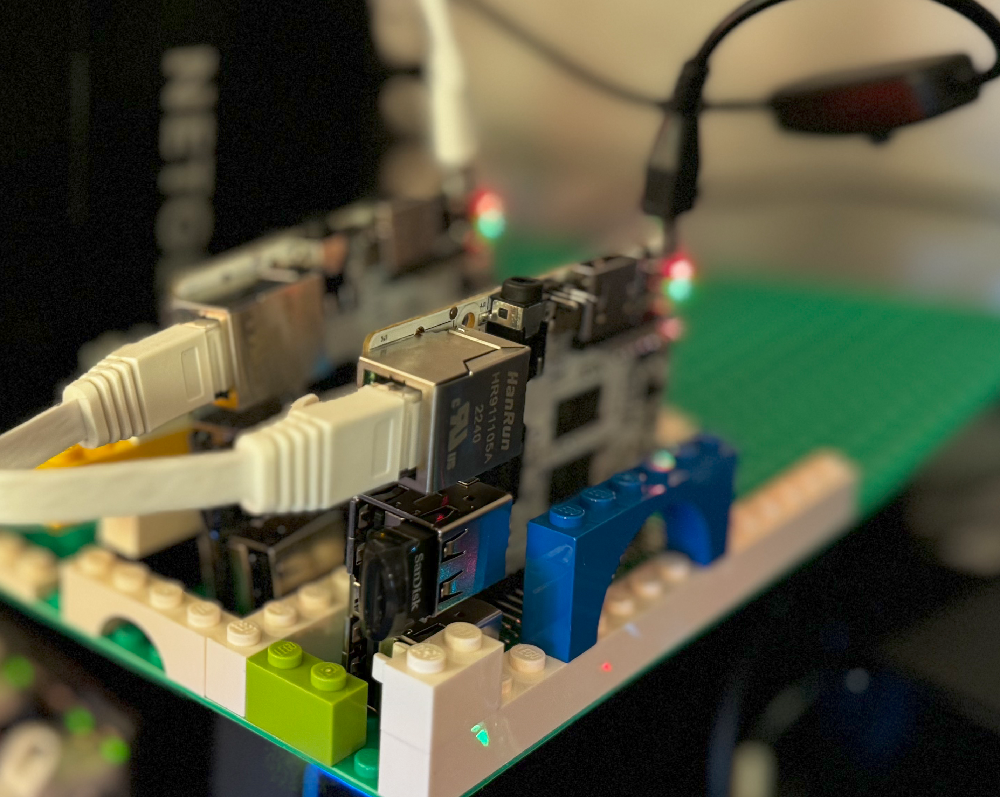
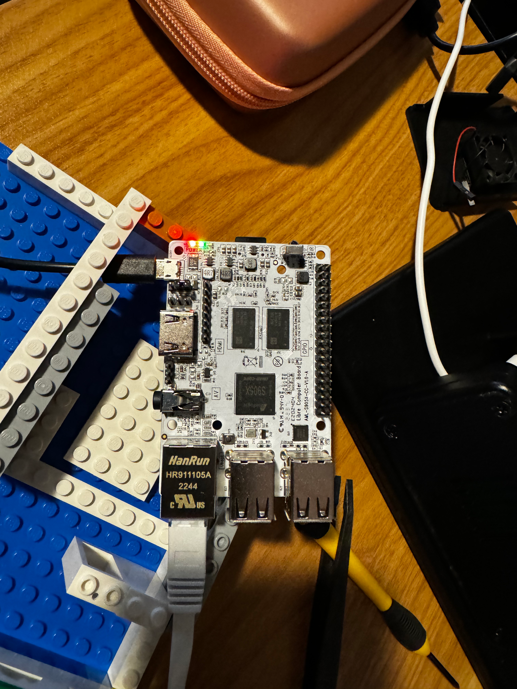

One of the nice things about the Libre Computing boards is the LTS OS releases. The Atomic Pi boards, just confirmed, have only released 20.04, way back in July 2020. We should still be able to do some cool things with Atomic Pi, later. For now, let’s focus on the Libre AML-S905X-CC (Le Potato) board.
First Pass
I assumed that I could boot directly from the USB drive, but that did not work. I deployed the Ubuntu 22.04 image to the SDCard and booted from that. Things worked, I was able to connect the device to my Kubernetes cluster and deploy a Spring Boot application.
I wasn’t happy
Booting Ubuntu directly from the SDcard works, but it is slower, I didn’t want that solution long term. I did a little bit of research and found out that I could use the SDcard to deploy the bootloader, and load the OS from the USB drive.
Bootloader
This did not work from my Mac, it worked from other Linux machines though. The repo for the bootloader is here: https://github.com/libre-computer-project/libretech-flash-tool
Create the USB drive
- Used the Raspberry Pi Imager tool.
- https://distro.libre.computer/ci/ubuntu/22.04/ubuntu-22.04.3-preinstalled-server-arm64%2Baml-s905x-cc.img.xz
- Needed to use p7zip to unzip the file.
The Raspberry Pi imager tool was able to setup default users and SSH keys, properly. This made the process pretty painless.
Install the SDCcard with bootloader and USB into the new Libre Computer Le Potato
- Red and Blue light mean that power is good.
- Wait for the green light, which means it found the operating system.
- Then the blue light starts flashing for what looks like activity.

After deployment
The steps that I took before adding the device to the Kubernetes cluster are here:
sudo apt update
sudo apt dist-upgrade -y
sudo apt autoremove -y
curl -fsSL https://tailscale.com/install.sh | sh
sudo apt install prometheus-node-exporter -y
Summary
I used my Spring Native Edge Rpi article as a guideline. This time, I added the nodes to a Kubernetes cluster, instead of using Docker. I’ve now got 4 nodes in my cluster. I’ll be adding more nodes, and more devices, as I continue to build out my home lab.